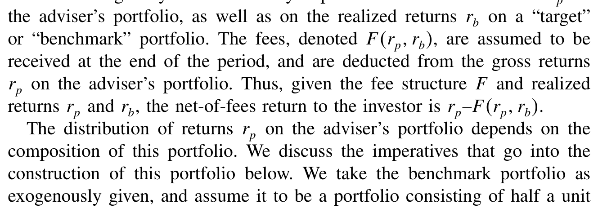
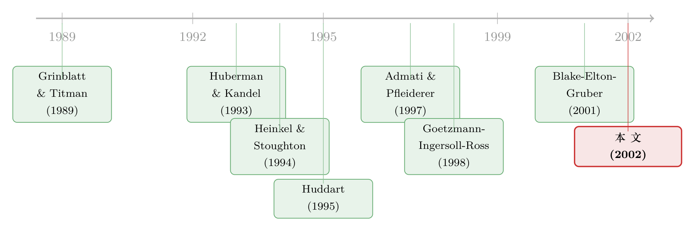

被监管钦点的「公平费」，为什么反而更宰投资者？
本文读的是 Das & Sundaram (2002, Review of Financial Studies)：在一个同时含有「组合选择激励—风险分担—能力信号」三股力量的模型里，作者让美国共同基金被法律强制使用的「对称」支点费 (fulcrum fee) 与对冲基金惯用的「不对称」激励费 (incentive fee) 来一场赛跑。结论出人意料——在不完全竞争的市场里，常被监管当作「保护投资者」典范的支点费，反而往往让投资者更亏，因为它太擅长帮高手「自证清白」，于是也太擅长帮高手把你的剩余榨干。
1 一条看似无可指摘的法律
先说一个事实。美国 1940 年《投资顾问法》的 1970 年修正案规定：共同基金若要用「与业绩挂钩」的报酬合约，就只能用一种——支点费 (fulcrum fee)。它的核心是「对称」：基金经理跑赢基准多少，多拿多少；跑输基准多少，就对称地少拿多少。罚和奖是一面镜子的两边。
与之相对的，是对冲基金里盛行、却被共同基金法律明令禁止的激励费 (incentive fee)：经理拿一笔基础费，再加一份「跑赢基准就分成、跑输了也不倒贴」的奖金。它的报酬曲线像一份看涨期权——下有保底，上不封顶。
监管者为什么偏爱前者、忌惮后者？逻辑听上去天衣无缝：激励费那条「期权式」的报酬曲线，会怂恿经理去赌——反正下跌的苦果由你投资者独吞，上涨的甜头他分一大块，那他当然会去搏一把「过度」的风险。对称的支点费则把经理和你绑在同一条船上，他不敢乱来。
这套说辞如此顺理成章，以至于几乎没人追问：站在投资者自己的福利上算总账，对称的支点费，真的更好吗？
这正是本文要拆开的那颗钉子。
2 一个把三股力量同时塞进去的模型
要回答这个问题，作者搭了一个看似简单、却把费率结构的三重角色全都装了进去的模型。首先得讲清楚，费率结构到底在哪三个地方影响投资者：
- 组合选择激励：费率结构决定经理愿意承担多大风险；
- 风险分担 (risk-sharing)：给定收益分布，费率决定了收益在经理与投资者之间怎么切分；
- 信号 (signaling)：当市场上有能力不同的经理时，费率本身可以充当一种「我是高手」的信号。
以往的文献往往只盯住其中一条；本文的野心，是把三条同时放上天平。
模型里有两位投资顾问和一位代表性投资者。一位顾问被称为「知情者 (informed)」，他有本事提前看清风险证券的真实收益分布；另一位是「无知者 (uninformed)」，只知道先验概率。类型是私人信息，投资者看不见，只能从顾问的行为里去推断。两位顾问都风险中性，目标是最大化期望费用，并各有一个保留费用水平——可以自然地理解为进入这个行业的门槛成本，分别记作 \(\mu_I\)（知情者）与 \(\mu_N\)（无知者）。
投资者是大量同质投资者的代表，初始财富 \(w_0\) 标准化为 \$1，持有的是均值—方差 (mean-variance) 偏好：
$$ E[\tilde{w}] - \frac{1}{2}\,\gamma\,\mathrm{Var}[\tilde{w}] $$
这里 \(\gamma > 0\) 衡量投资者对方差的厌恶程度。请记住这个 \(\gamma\)——它是「风险分担」这股力量的开关：\(\gamma=0\) 时投资者风险中性，风险分担不起作用；\(\gamma\) 越大，他越在乎收益分布的胖尾。
证券有三种：一种无风险证券（净收益归零），两种风险证券，每种都服从二项过程，毛收益要么是 \(H\)、要么是 \(L\)，且满足
$$ H > 1 > L, \qquad H + L > 2 . $$
「真实」的联合分布要么是 \(\pi_1\)、要么是 \(\pi_2\)，两者先验等概率。知情者投资前就知道是哪个，无知者只知道先验。两种分布的对称结构，恰好让无知者「没有任何基于收益的理由」去偏好某一只证券——单看先验，每只证券都是各有 $1/2$ 的概率给出 \(H\)。
下面这张表，就是整个模型的「物理引擎」：

Table 1: describes our assumptions concerning these distributions. Each
表里的概率被约束为 \(p + 2q + r = 1\)、\(p,\,q,\,r > 0\)、且 \(p > r\)。最后那条 \(p > r\) 很关键：它意味着在 \(\pi_1\) 下，第一只证券拿 \(H\) 的概率严格高于第二只。换句话说，知情者知道该重仓哪只，而无知者两眼一抹黑、只能两边各押一半。这就是「能力」二字在模型里的全部含义。
3 两种费率，写成两条公式
接着，把两种费率结构写成数学。基准组合是外生给定的——半单位第一只、半单位第二只风险证券（现实里支点费基金压倒性地用 S&P 500 这类公认指数当基准，所以这个假设并不勉强）。设经理实现的组合毛收益为 \(r_p\)，基准组合实现的毛收益为 \(r_b\)，费用 \(F(r_p, r_b)\) 在期末从毛收益里扣除，投资者拿到的净收益是 \(r_p - F(r_p, r_b)\)。
支点费被定义为线性、对称的形式：
其中 \(b_1, b_2 \ge 0\)。当 \(b_2 = 0\) 时，费用退化为单纯的「按规模分成」，也就是常说的「固定比例费 (fraction-of-funds fee)」或「平费」。
激励费则把那条对称的业绩项，换成一条带「地板」的期权式曲线：
$$ F = b_1 r_p + b_2 \max\{\,r_p - r_b,\ 0\,\} $$
差别就藏在那个 \(\max\{\cdot,\,0\}\) 里：跑赢基准，按 \(b_2\) 分成；跑输基准，业绩项归零、绝不倒贴。两条公式只差这一刀，却几乎决定了后面所有的「动作」。
事件顺序是个标准的多阶段博弈：顾问先同时宣布费率结构 → 投资者据此选定一位顾问（为分析简单，假设只能投一位）→ 知情者收到关于收益分布的信息 → 顾问选择组合、收益实现。组合 \((a_0, a_1, a_2)\) 须满足 \(a_0 + a_1 + a_2 = 1\)、\(a_1, a_2 \ge 0\)（禁止卖空），以及一道杠杆上限 \(a_1 + a_2 \le a_{\max}\)（\(a_{\max}=1\) 即「不许加杠杆」）。
4 先看清「赌性」：激励费确实让人更敢赌
模型用逆向归纳法求解：先定最后一阶段两位顾问会怎么选组合，再倒推投资者的选择与顾问的费率宣告。这里我们只关心分离均衡 (separating equilibrium)，即费率本身能把两种类型区分开的情形。
先验证那个监管者的直觉。结论是：激励费确实诱发更激进的组合。在支点费环境里，连无知者都只会选「适度」风险的组合；可一旦切到激励费，即便是无知者也会切换到极端的、在精确意义上次优的组合——因为下行被那条「地板」保护住了，他没有理由不把赌注押满。监管者没看错这一半。
但真正关键的一步在于：「敢赌」未必等于「坑了投资者」。要算投资者的总账，还得把另外两股力量——风险分担与信号——一起算进来。于是反转出现了。
5 真正的反转：对称费太擅长「自证清白」
作者最醒目的发现是：在稳健的条件下，分离均衡里投资者的福利可能严格地在激励费下更高；甚至能找到一整片参数区域，让激励费占优 (dominant)——即对投资者从不更差，且在一段参数上严格更好。
为什么？投资者的均衡效用，来自两股力量的拉锯：
一边，是风险分担与组合选择，偏向支点费。 当投资者风险厌恶（\(\gamma>0\)）时，对称的支点费把收益分布从两条尾巴往中间挪——收益低时抬高投资者的回报，收益高时压低它，这正是风险厌恶者想要的「熨平」。而且它还压住了经理乱赌的冲动。这两点都对投资者有利。
另一边，是信号效率，却恰恰反过来咬投资者一口。 这是全文最精妙、也最反直觉的一环：对称的支点费，让知情者更容易把自己和无知者区分开。原因在于，支点费会放大无知者「押错组合」时的下行风险，从而让「模仿高手」这件事变得更昂贵。于是知情者可以一边把费率设得更高，一边仍然让无知者无利可图、不敢模仿。
可这对投资者意味着什么？意味着知情者借着这份「易于分离」的便利，把费率往上抬，从投资者兜里榨走更多的剩余效用，压低了投资者的均衡效用。 监管者眼中支点费的优点（公平、对称、便于甄别），到了不完全竞争的市场里，正好成了高手「合法宰客」的工具。
哪股力量占上风，取决于无知者的保留费用 \(\mu_N\)：
- 当 \(\mu_N\) 很小（无知者进入门槛低）：知情者「抬价而不被模仿」的空间本就很窄，于是「费率结构能否帮助分离」这件事变成了胜负手。支点费在这一点上的优势，恰恰意味着知情者能榨走更多投资者剩余——于是激励费对投资者更优。（一个极端是 \(\mu_N\) 趋近于零时，激励费下的均衡费率也必须趋近于零才能维持分离——因为激励费的报酬非负，知情者任何「够高」的非零费率，都能被无知者有利可图地模仿——结果几乎全部剩余都归了投资者。）
- 当 \(\mu_N\) 很大：分离对知情者本就容易，「帮助分离」这层便利变得无关紧要，于是支点费在风险分担与组合选择上的优势重新占上风——支点费对投资者更优。
还有两个干净的边界结果值得记住。其一，作者先在风险中性投资者（\(\gamma=0\)，风险分担被关掉）下验证逻辑：此时预期是「\(\mu_N\) 小则激励费严格更优、\(\mu_N\) 大则两者等价」，结果恰如所料。其二，最醒目的是——当经理不能使用杠杆策略（\(a_{\max}=1\)）时，无论投资者风险厌恶与否，激励费都无歧义地占优支点费。
唯一一处结论翻转，发生在完全竞争的经理市场：此时交易的全部剩余都归投资者，而支点费在风险分担、组合选择、以及分离效率三方面都更优，于是支点费无歧义地胜出。这反而给了现实一个漂亮的注脚：把美国共同基金业看作竞争性的，支点费立法就有了理论依凭；把对冲基金业看作高进入门槛的不完全竞争市场，激励费的流行也就顺理成章——而这正是现实里我们观察到的格局。
本文还悄悄换了一个视角：传统委托—代理框架里，合约由委托人（投资者）说了算；而本文让代理人（经理）控制费率的选择。作者的理由很实在——现实中基金与顾问公司关系极近，管理公司常常就是基金的设立者。而「监管要去限制费率形式」这件事本身，恰恰暗示了：如果合约真由投资者说了算，限制合约形式只会伤害、绝不会增进投资者福利。换句话说，监管的存在，本身就是「经理说了算」的一个旁证。
6 文献脉络
把这条线捋一捋。最早一拨工作盯住的是「给定费率，经理会怎么反应」：Grinblatt & Titman (1989) 在理论上比较了支点费与不对称激励费的激励效应，而 Davanzo & Nesbit (1987)、Grinold & Rudd (1987) 则给出了「激励费下风险承担上升」的经验证据。
接着，一个自然的问题是把费率放进均衡里看。Admati & Pfleiderer (1997) 研究了在给定支点费下、对经理设基准的可取性；Heinkel & Stoughton (1994) 用一个同时含道德风险与逆向选择的两期模型，去解释「按规模分成」为何在资产管理业里占主导。
然后，第三股线索转向信号。Huberman & Kandel (1993) 让经理在给定平费下用组合选择来传递能力信号；Huddart (1995) 也研究外生平费下用组合选择做信号，但他更进一步指出——采用激励费可以缓解不良的声誉效应、让投资者变好。这正是本文反转的思想源头。

本文 (Das & Sundaram, 2002) 站在这三股线索的交汇处：它不再把费率结构当外生给定，而是让费率本身同时承担组合激励、风险分担与信号三重角色，再让支点费与激励费正面赛跑。它的姊妹篇 Das & Sundaram (1998) 也问过类似问题，但只有一只风险资产、一只无风险资产，且不含信号。最后，经验上 Blake, Elton & Gruber (2001) 的发现与本文呼应：带激励费的基金平均并不跑赢基准，却比没有激励费的基金做得好，且倾向于承担更多风险、追逐非基准策略——这与模型「激励费诱发更激进组合」的预测一致。
（关于「法律强制费率对称、最优合约却偏偏不对称」这个张力，可参见《一条法律规定基金经理的奖罚必须对称，可最优合约偏偏是「不对称」的》；关于把激励费从合约里拿掉后经理风险承担如何变化的经验证据，可参见《把「奖金」从工资条上抹掉，基金经理反而更敢赌了？》；关于「投资者为什么要主动绑住经理的手」这一相关命题，可参见《你把钱交给高手，又为什么把他的手绑起来？》。）
7 评论与延伸（Q&A + 研究方向）
(a) 几个可能的疑问
Q：激励费让经理更敢赌，这难道不该让投资者更糟吗？监管者错在哪？
监管者只算了「组合选择」这一笔账，没算「信号」那一笔。本文的核心正是：激励费在组合选择和风险分担上确实更差，但它在「让高手自证清白」上更差——而对投资者来说，高手越难自证清白，就越榨不走投资者的剩余。当无知者进入门槛低时，后一笔账压过前一笔，投资者反而更喜欢激励费。
Q：这个「反转」是不是全靠投资者风险中性这个特例撑起来的？
不是。作者先在风险中性投资者下验证逻辑（此时风险分担被关掉，结论最干净），再证明它在风险厌恶投资者下依然成立（只是在极高波动率时会出现更复杂的花样）。更强的是，在禁止杠杆（\(a_{\max}=1\)）时，无论投资者多厌恶风险，激励费都无歧义占优。所以风险中性只是「最容易讲清楚」的入口，不是结论的拐杖。
Q：那为什么共同基金用支点费、对冲基金用激励费，反而都成了「对的」？
因为竞争结构不同。把共同基金业看作竞争性市场：剩余全归投资者，而支点费在三个维度上都更优，于是支点费立法有理论依凭。把对冲基金业看作高门槛的不完全竞争市场：此时激励费对投资者福利更低、对经理收益更高，于是不受管制的经理会主动选激励费——这正是现实。模型反过来「解释」了制度分布。
Q：「经理控制合约」这个假设是不是太强了？传统模型不都是委托人定合约吗？
这是本文有意的反转，且有两条辩护：其一，现实中管理公司常常就是基金的设立者，顾问与基金关系极近；其二，「监管需要去限制费率形式」本身就暗示合约不在投资者手里——否则限制只会伤害投资者，监管将无从谈起。当然，这个假设也是结论成立的前提之一，换成投资者定约，故事会完全不同。
Q：模型只让投资者投一位顾问、基准还外生，会不会把结论做窄了？
这是两处为可解性付出的代价，作者也坦承。只投一位顾问是因为允许投资者在多个基金间自由配置会让模型不可解（投资者的反应会进入双方的决策问题核心）；基准外生则与现实相符——用支点费的基金压倒性地用 S&P 500 这类公认指数。代价是：本文捕捉不到「投资者在多基金间分散」对均衡费率的反向约束。
Q：禁止杠杆时激励费「无歧义占优」，这个边界结果的直觉是什么？
没有杠杆，经理把「赌性」放大的能力被掐住了，激励费在组合选择上的劣势被大幅削弱；而它在抑制「高手榨取剩余」上的优势却原封不动。两相抵消之下，天平彻底倒向激励费。这也提示：激励费的「坏」，很大程度上是杠杆放出来的，而非激励费本身。
(b) 几个可能的研究问题与提案
1. 把这套「信号 vs 风险分担」的天平搬到公司债基金。
【经济故事】公司债基金的业绩高度依赖经理对信用与流动性的甄别能力，且基金常持有难以估值、流动性差的标的——这恰是「知情 vs 无知」差异最大的地方。激励费在这里会不会比在股票基金里更能榨取投资者剩余？ 【可行性】中。Morningstar/CRSP 基金费率数据可识别费率结构，持仓与 TRACE 可度量信用/流动性暴露；难点在于把「分离均衡」映射到可观测变量，识别需要外生的费率结构变更（如某些司法辖区的监管差异）做准实验。
2. 用「保留费用 \(\mu_N\)」的代理变量做横截面检验。
【经济故事】本文的核心比较静态是：\(\mu_N\)（无知者进入门槛）小则激励费对投资者更优、大则支点费更优。能否找到门槛成本的代理变量（如牌照/合规成本、最低规模门槛、品牌资本），检验「门槛越低的细分市场里，激励费基金的投资者净收益越占优」？ 【可行性】中。挑战在于「投资者福利」难直接观测，需用净于费的风险调整收益做近似；且 \(\mu_N\) 的代理变量本身可能内生于市场结构。
3. 外资持有人与费率结构的交互。
【经济故事】外资持有人往往面临更严重的信息劣势（更接近模型里的「无知/被榨取」一方）。在允许激励费的市场里，外资重仓的基金，其费率是否系统性地更「期权化」、投资者剩余被榨取得更多？ 【可行性】中偏低。需要跨国基金层面的费率与投资者构成数据，二者同时可得的样本稀缺；识别上还要剥离外资偏好与费率结构的共同决定因素。
4. 完全竞争 vs 不完全竞争的「反转」做一次自然实验。
【经济故事】本文最干净的可证伪预测是：竞争结构一变，支点费与激励费的福利排序就翻转。能否找到一次外生改变经理市场竞争度的冲击（如某类基金牌照放开、平台准入门槛骤降），看费率结构与投资者净收益的关系是否随之翻转？ 【可行性】高（若能找到合适冲击）。这类准入改革在多国都有，DiD 框架天然适配；关键是找到既改变竞争度、又不直接改变费率法规的「干净」冲击。
5. 杠杆约束作为政策工具。
【经济故事】本文显示「激励费的坏，主要是杠杆放出来的」。那么对激励费基金单独施加杠杆上限，是否比直接禁止激励费更能改善投资者福利？这是一条比「一刀切禁激励费」更精细的监管路径。 【可行性】中。可在模型内做福利比较（理论上 doable），经验上则需利用各国对对冲基金杠杆监管的差异，但杠杆的真实使用度测量困难（参见衍生品对冲程度难以度量的老问题）。
8 我的判断
这篇论文的贡献，在于它把一个被监管直觉「锁死」的问题重新打开了。它没有满足于「激励费让人乱赌、所以坏」这种一阶直觉，而是诚实地把费率结构的三重角色同时放进一个可解的均衡里，然后让读者看见：正是支点费「便于甄别」这一最被称道的优点，在不完全竞争下成了高手榨取投资者剩余的渠道。 「公平的对称」与「对投资者好」，原来不是一回事。更难得的是，它的边界结果（风险中性、禁杠杆、完全竞争）一个个都干净利落，且与共同基金/对冲基金的现实分工严丝合缝。
对识别（这里是「对模型设定的依赖」）我有两点保留。其一，「经理控制合约」与「投资者只能投一位顾问」这两个假设承担了不小的分量——后者尤其屏蔽了「投资者在多基金间分散、从而反向约束费率」这条现实里很重要的力量，放开它结论是否稳健，值得追问。其二，所有结论都建立在「分离均衡」上，而混同均衡 (pooling) 被有意排除；现实中费率的混同恐怕才是常态，那里的福利排序未必照搬。
后续我最想看到的，是把这套「信号 vs 风险分担」的天平拉到数据里去称一次重——尤其在公司债与信用市场，那里「知情 vs 无知」的鸿沟最深、流动性最稀薄、外资持有人的信息劣势最明显。如果本文的核心比较静态（\(\mu_N\) 小则激励费更友好）能在某个准实验里被验证或证伪，这个二十多年前的纯理论模型，就真正接上了地气。
参考文献
Admati, A., and P. Pfleiderer (1997). Does It All Add Up? Benchmarks and the Compensation of Active Portfolio Managers. Journal of Business 70(3), 323–350.
Blake, C., E. Elton, and M. Gruber (2001). Incentive Fees and Mutual Funds. Working paper, Stern School of Business, NYU.
Das, S., and R. K. Sundaram (1998). On the Regulation of Mutual Fund Fee Structures. Working paper, Stern School of Business, NYU.
Das, S. R., and R. K. Sundaram (2002). Fee Speech: Signaling, Risk-Sharing, and the Impact of Fee Structures on Investor Welfare. Review of Financial Studies 15(5), 1465–1497.
Davanzo, L., and S. Nesbit (1987). Performance Fees for Investment Management. Financial Analysts Journal 43(1), 14–20.
Goetzmann, M., J. Ingersoll, and S. Ross (1998). High Water Marks. NBER Working Paper 6413.
Grinblatt, M., and S. Titman (1989). Adverse Risk Incentives and the Design of Performance-Based Contracts. Management Science 35, 807–822.
Grinold, R., and A. Rudd (1987). Incentive Fees: Who Wins? Who Loses? Financial Analysts Journal 43(1), 27–38.
Heinkel, R., and N. Stoughton (1994). The Dynamics of Portfolio Management Contracts. Review of Financial Studies 7(2), 351–387.
Huberman, G., and S. Kandel (1993). On the Incentives for Money Managers: A Signaling Approach. European Economic Review 37, 1065–1081.
Huddart, S. (1995). Reputation and Performance Fee Effects on Portfolio Choice by Investment Advisers. Mimeo, Duke University.